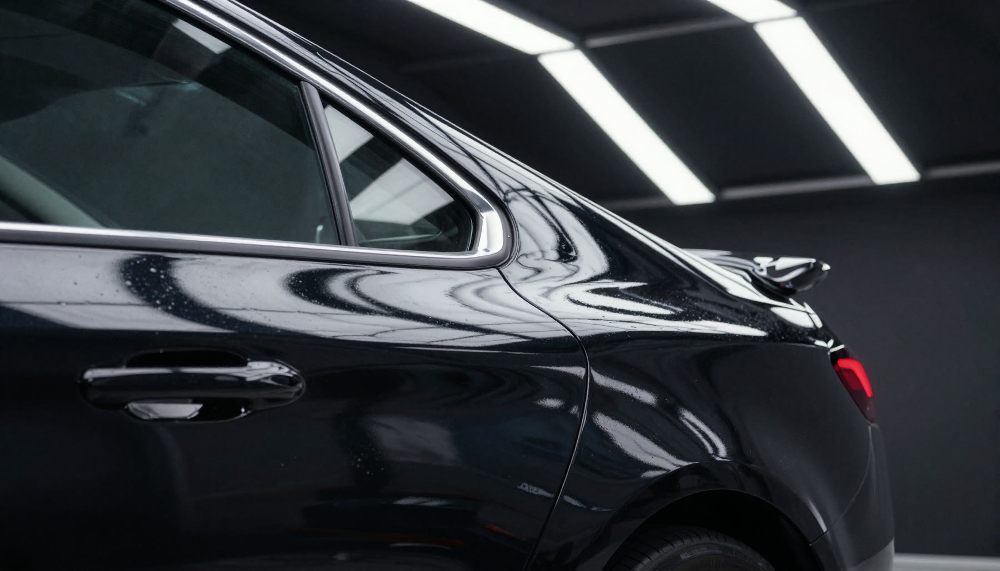
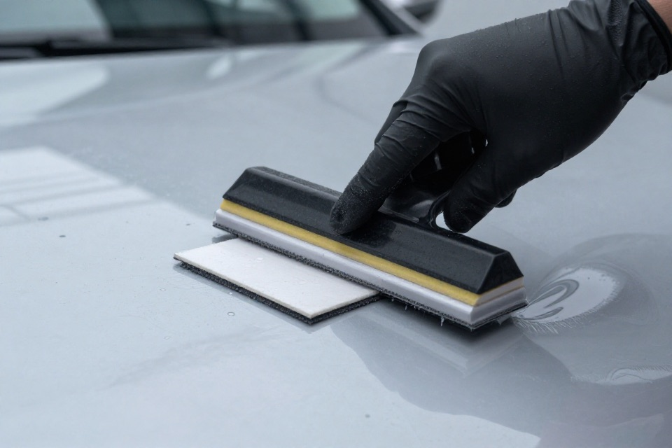
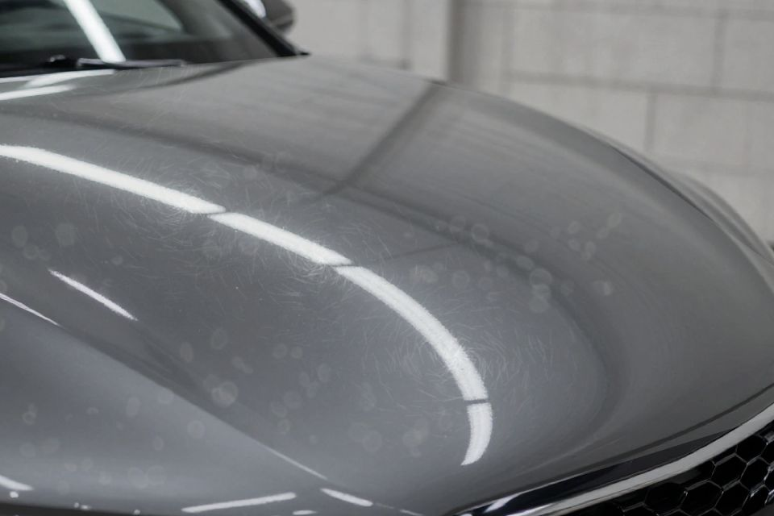

Araç kabul formu
Aracı teslim alırken doldurduğumuz formun kısa hâli; fiyatlar KDV dâhil başlangıç fiyatlarıdır.

Atölyeden



Gelenlerin notu (örnek)
Seramik için gittim, önce kaputtaki halkaları gösterdi. Cilasız seramiğin onları kapatmayacağını söyledi, ikisini birlikte yaptık.
Fiyatı SUV için ayrı yazmışlar, gidince de aynısını söylediler.
Derin çizik için “bu cilayla çıkmaz” dedi, boşuna para harcatmadı.
Aracınızı nasıl alır, nasıl veririz
- Birlikte etrafında yürürüzVar olan çizik, göçük ve taş izlerini sizin yanınızda fotoğraflarız. Plaka fotoğrafa girmez.
- Kesin fiyatı yazılı veririzPaket, ne dâhil ve teslim günü WhatsApp'ta yazılı durur.
- İş bitince birlikte bakarızGün ışığında ve atölye lambası altında panel panel bakarız; ilk gün çektiğimiz fotoğraflarla karşılaştırırız.
- Bakım notuSeramikten sonra ilk hafta yıkama yok; fırçalı otomatik yıkama ince çizik yapar, elle yıkama önerilir.
Aynı kaput, aynı ışık
Matlık, kurumuş su lekesi ve ince yıkama izleri boyayı soluk gösterir; tavan ışığının yansıması dağınık görünür. Tek aşama pasta-cila bu yüzeysel izleri alır ve yansıma düz çizgiye döner; derin çiziği aracı görünce söyleriz. Sürgüyü yana çekin.


ÖnceSonra- Önce: ışık yansıması dalgalı
- Sonra: ışık yansıması düz çizgi
Temsili: “önce” hâli aynı fotoğraftan çizildi.
Ürün (üretici) garantisi
Seramik ya da film markasının verdiği belge. Yalnız belgesi olan ürün için yazılır; belgesi teslimde verilir.
İşçilik güvencesi (işletme)
Kabarma, kenar kalkması gibi uygulama kaynaklı sorunlarda ne yapılacağı ve süresi yazılı verilir.
Sorular
Burada olmayanı WhatsApp'tan sorun.
Kullanılan film ve seramik hangisi?
Ürünün markası ve türü (film için TPU olup olmadığı) teklifte yazılı verilir; kutusunu ve belgesini görebilirsiniz.
Ne kadar sürer, aynı gün alabilir miyim?
Seramik ve film birlikte olur mu?
Olur. Genelde önce film uygulanır, seramik filmin üstüne sürülür; usta aracı görünce sırayı ve süreyi yazar.
Cam filmi yasal mı?
Ön cama film uygulamıyoruz. Yan ve arka camlarda yasal sınıra uygun film kullanılır; güncel sınırı uygulamadan önce birlikte netleştiririz.
Aracı alıp getiriyor musunuz?
Hayır, aracı atölyeye siz getirirsiniz.
Küçükbakkalköy, Ataşehir
- Adres
- Örnek Sokak No: 5, Küçükbakkalköy, Ataşehir
Haritada yol tarifi al (demoda kapalı) - Saatler
- Pazartesi–Cumartesi, 09.00–19.00
- Telefon
- 0216 000 00 00
- Gelenler
- En çok Ataşehir, Kadıköy, Ümraniye ve Maltepe'den